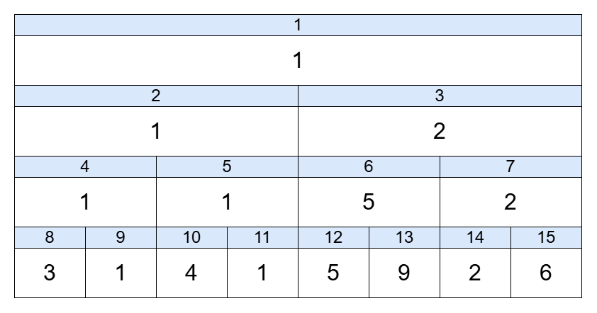
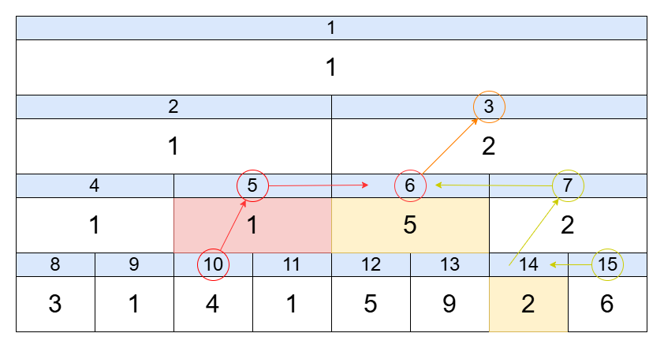
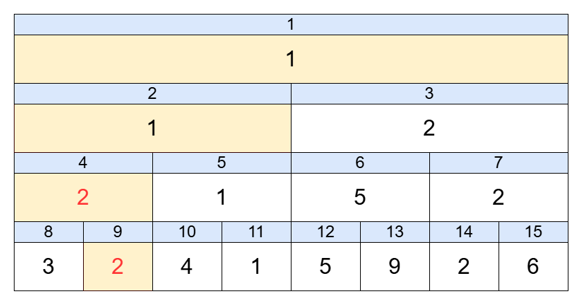

区間クエリや更新が高速に行える木構造について解説します。
セグメントツリーは、配列に対する区間クエリと一点更新を $O(\log N)$ で行うことができる木構造です。
具体的には、ある区間の最小・最大値、和など、結合法則が成り立つ演算なら何でも取り扱うことができます。
| 操作 | オーダー |
|---|---|
| 区間クエリ | O(log(N)) |
| 一点更新 | O(log(N)) |
| 区間更新(M個) | 通常 O(Mlog(N))、遅延評価セグメント木では O(log(N)) |
下図は A = [3,1,4,1,5,9,2,6] のときの最小値についての値を持つセグ木の例です。
サイズは2Nとなっており、上に行くにつれてより大きな区間の最小値を持つようになっています。

上図の区間 [l, r) における最小値を求めることを考えます。
今回は、l=2, r=7, N=8, A[l:r]=[4,1,5,9,2], seg = セグ木とします。
また、暫定の最小値を ans に保存するため、十分に大きな値で初期化します。
L = l+N = 10, R = r+N = 15 とし、それぞれの葉にアクセスできるようにします。

一点更新は区間クエリとは異なり、比較的処理が簡単で直感的です。
A[1]の値を1から2に変更したいとします。
まず seg[9] = 2 とします。
次に親である seg[4] を、2つの子の値を用いて演算し更新します。seg[4] = min(seg[8], seg[9])
同様に seg[2], seg[1] を更新することで、一点更新の操作は $O(\log N)$ で完了することがわかります。

AtCoder Library (ACL) にはセグ木のライブラリが存在します。
from atcoder.segtree import SegTree
def op(x, y): # 演算関数の定義 (min, max, xor, 和など)
return min(x, y)
e = float('inf') # 単位元の定義
a = [3,1,4,1,5,9,2,6] # 対象データを適宜設定
st = SegTree(op, e, a) # 初期化: SegTree(演算関数, 単位元, 配列)
print(st.prod(0, 3)) # 区間取得: prod(l, r) [0, 3) の最小値 -> 1
st.set(1, 2) # 一点更新: a[1] を 2 に変更
print(st.prod(0, 3)) # [0, 3) の最小値
print(st.all_prod()) # 配列全体の取得1
2
1| 操作 | 操作内容 | 計算量 |
|---|---|---|
SegTree.prod(l, r) | 区間 [l, r) の演算結果 | $O(\log N)$ |
SegTree.all_prod() | 全体の演算結果 | $O(1)$ |
SegTree.set(i, x) | 元の配列Aの $A[i]$ を x に変更 | $O(\log N)$ |
prod は代数学における結合法則が成り立つ二項演算 ($a \circ b$) の結果を広く呼ぶ「積」(product) から来ています。
掛け算の積ではないです。